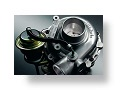

Current Projects
Past Projects
Advanced Vehicle Control Systems
Copier Paperpath Control
Disk Drive Control
Intelligent Machining
ILP Summary '96-'97
 Advanced Vehicle Control Systems
Advanced Vehicle Control Systems
-->Adaptive Cruise Control Systems with Stop-and-Go
-->Turbocharged Spark-Ignition Engine Control
Turbocharged Spark-Ignition Engine Control
Overview
| Researchers
| Sponsor

Due to ever-growing concerns about the depletion of the world's oil supply, a critical area of development in the automotive industry is the improvement of fuel efficiency in commercial vehicles. Turbocharging a downsized (smaller) engine has emerged as an effective method of reducing fuel consumption with minimal sacrifices to performance. This method also offers the benefits of lower manufacturing and maintenance costs compared to other fuel efficient schemes (e.g. electric or hybrid vehicles).
However, forced induction presents some interesting estimation and control problems, since the air dynamics of a turbocharged setup are significantly more complex than a naturally aspirated setup. Additional control valves are also needed in order to maintain the intake/exhaust manifold pressures in their respective desired operating ranges. Furthermore, strict emissions standards require the use of exhaust gas recirculation and variable valve timing, introducing even more control variables and further complicating the system dynamics.
It is important to inject the appropriate amount of fuel into the combustion chamber for a stoichiometric mixture with the air; too much fuel increases fuel consumption, too little fuel can cause damage to the engine, and deviations either way result in undesirable emissions. A time-delayed air/fuel ratio measurement requires most of the fuel control to be done in feed forward. Thus, accurate estimation of the mass of air entering the combustion chamber is crucial. Controlling this quantity is also necessary for torque control, particularly in the case of tracking a transient torque profile.

Figure 1: Air Schematic